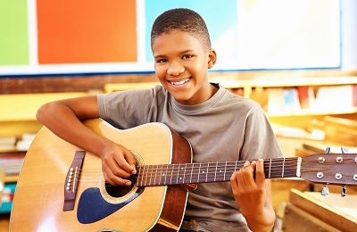

We make learning music fun! We offer private lessons for piano, guitar, and violin. Contact us today to schedule your first lesson for free!
We provide
- Dedicated and professional Instructors
- No Long-Term Contracts
- Flexible Schedule
- Spring and winter performances
- Summer Camps
Piano Lessons

We offer piano lessons for all ages, beginning at age three.
Whether you are a beginner or have been playing the piano for a while,
we have a program to suit your needs. Learn new techiques, theory,
harmony, and tone. Learning how to play the piano helps develop hand-eye coordination and self-confidence.
Guitar Lessons

We teach acoustic guitar, electric guitar, bass guitar, and ukulele. We have guitar lessons for beginners, intermediate players, and advanced players. Improve your skills with weekly lessons. Learn new tips and techniques from experienced instructors. We also have a rock band program that you can join.
Violin Lessons

We offer violin lessons for all ages, beginning at age six. Our violin lessons include a variety of music styles, from fiddle to classical. Our instructors will help you fine-tune techniques and program, tailored to your needs.